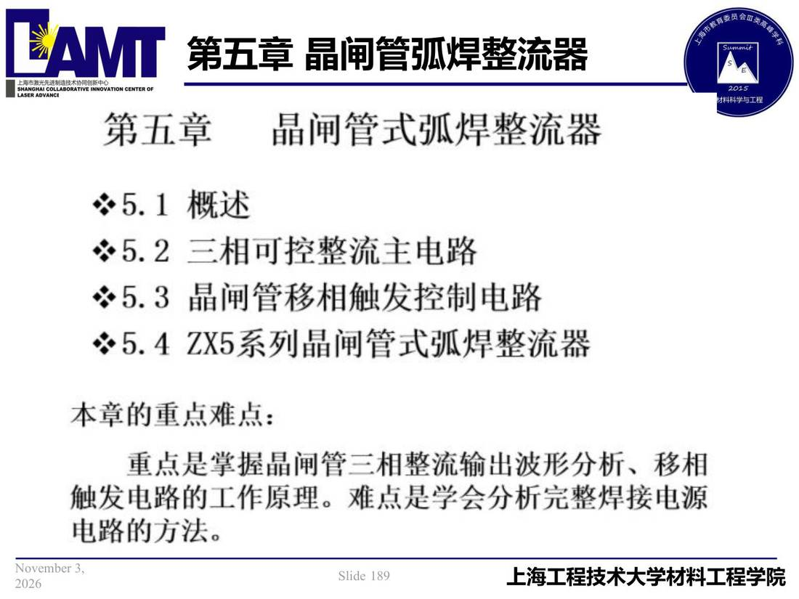

05 第5章 晶闸管弧焊整流器/p189 本章导览
p189 本章导览
📄 原文：📄 弧焊电源 课件（PDF 第 189 页）（幻灯片 189/273；PDF 第 189 页）
本章导览

讲义原文
本页在课件中是纯图文版式（无文字层），内容以页图与下面的 OCR 文本为准。
页面文字（OCR 机读，可能有错字，以页图为准）
第五章 晶闸管式弧焊整流器 5.1 概述 ※5.2 三相可控整流主电路 ※5.3晶闸管移相触发控制电路 ※5.4 ZX5系列晶闸管式弧焊整流器 本章重点难点： 重点是掌握晶闸管三相整流输出波形分析、移相 触发电路的工作原理。难点是学会分析完整焊接电源 电路方法。